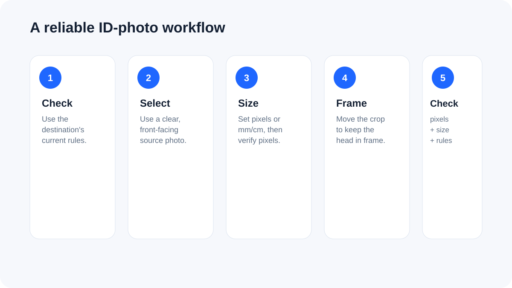

How to resize a passport or ID photo correctly
The safest workflow starts with the destination's current requirements, then sets the exact canvas size, adjusts the crop and finally checks the exported pixels and file size before submission.

Start with the receiving application's rules
Passport, visa, exam, employment and government systems can use different photo dimensions, file-size limits, background requirements and head-position rules. Treat the current instructions for the specific application as authoritative instead of assuming that one generic passport size works everywhere.
Choose pixels or physical dimensions
A digital upload ultimately becomes pixels. When a requirement is stated in millimetres or centimetres, the tool converts the requested physical size using your selected DPI. For a 35 × 45 mm canvas at 300 DPI, for example, the working size is approximately 413 × 531 pixels. Always compare the resulting pixel dimensions with the destination's instructions.
Frame the subject before exporting
Center cropping is not always correct for a portrait. Use the framing control to move the image vertically so the head and shoulders remain inside the required crop. The tool does not identify faces automatically, so the final visual check is important.
File size is a separate requirement
A photo can have the correct dimensions and still be rejected because its file is too large. After the canvas is set, use the maximum-file-size option to reduce the JPG quality only as far as necessary. Very small limits may require a smaller pixel canvas, so verify both dimensions and file size after export.
Background and image quality
Use the background required by the destination. A clean, evenly lit source with a plain background is much easier to prepare than a tightly cropped or heavily shadowed photo. Compression cannot repair poor lighting, blur or a missing part of the head.
Privacy
Portrait photographs can contain personal information. The FreePDF Tools image workflow runs in the browser, so the source photo does not need to be uploaded to a conversion server.
Use the Passport & ID Photo Maker
Open Passport & ID Photo Maker →
Frequently asked questions
Is 35 × 45 mm a universal passport-photo size?
No. Photo specifications differ by country, application and submission route. Use the exact current requirement supplied by the receiving authority.
Does DPI change an uploaded digital photo?
The tool uses DPI when converting a physical measurement such as millimetres into pixels. The receiving application still evaluates the actual digital dimensions and other requirements it specifies.
Can I process several photos?
Yes. Select multiple source images with the same requirements. Each JPG is generated and downloaded individually.